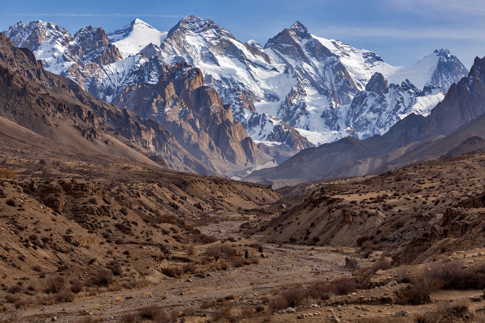

Afghanistan
| Capital | Kabul |
|---|---|
| Languages | Pashto, Dari |
| Population | around 40 million (estimate) |
| Neighbours | Pakistan, Iran, Turkmenistan, Uzbekistan, Tajikistan, China |

[Image: the rugged Hindu Kush mountains above a valley in Afghanistan, with snow on the peaks]Afghanistan, officially the Islamic Emirate of Afghanistan, is a landlocked country in South and Central Asia, bordered by Pakistan, Iran, Turkmenistan, Uzbekistan, Tajikistan and China. Its capital and largest city is Kabul. With a population estimated at around 40 million, it is a mountainous, ethnically diverse country at a historic crossroads of trade routes.
Afghanistan has been a crossroads of empires — Persian, Greek, Arab, Mongol and British among them — and in the nineteenth century was a buffer state between the British and Russian empires in the 'Great Game'. It gained independence from British influence in 1919.
Recent history
The Soviet–Afghan War (1979–1989), in which Soviet forces fought mujahideen insurgents, devastated the country and was followed by civil war and the first Taliban government (1996–2001). After the September 11 attacks, a US-led invasion in 2001 toppled the Taliban for sheltering al-Qaeda, and an internationally backed Islamic Republic governed for twenty years.
Following the withdrawal of US forces, the Taliban retook Kabul in August 2021 and re-established the Islamic Emirate; its government has not been broadly recognised internationally, and its restrictions on women's education and work have drawn widespread condemnation.
Geography and people
The Hindu Kush mountain range dominates the country, which also contains the high Wakhan Corridor reaching to China. Major ethnic groups include Pashtuns, Tajiks, Hazaras and Uzbeks; the official languages are Pashto and Dari (Persian).
The economy remains largely agricultural — Afghanistan is known for pomegranates, nuts and saffron — and the country has significant unexploited mineral deposits. Decades of war have left it among the world's poorest countries, heavily dependent on humanitarian aid.